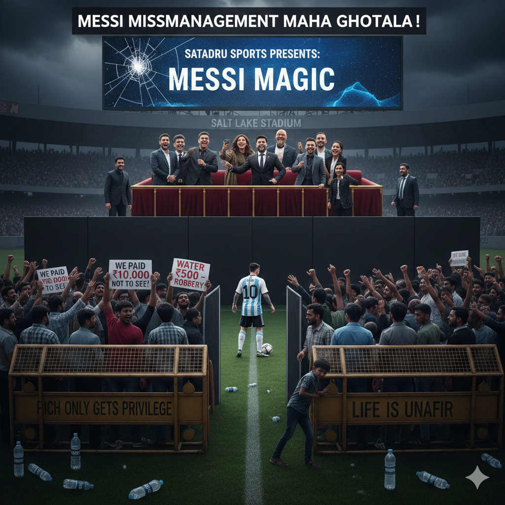

A Divided Glance at Messi
In a series of extremely shameful events which were unveiled in Salt Lake, Kolkata's Yuva Bharati Football Stadium, once again proved that the rich and the privileged don't give a damn about the rights and well-being of the common people. They see them only as a means to fill their own pockets and make laws which only apply to the ordinary man and which, only they are meant to broke! The little boy from Rosario did show his face to Kolkata but it was eclipsed by the ugly, rotten, unholy, dented, pouted and ridiculous faces of the elite who seemed to be glued to the G.O.A.T. all the time. It's extremely disheartening to hear about the poor people pouring every last meagre coin and sacrificing every essential needs travelling afar in difficult situations just to get a glimpse of their Football idol. For many, it was their once in a lifetime opportunity to witness history and a fleeting escape from their relentless grind of hardship and despair.
Their dreams, however, were mercilessly crushed not by bad luck, but by the cold indifference of a system designed to favor the privileged. Despite their immense personal sacrifice, these dedicated fans were often denied entry due to disorganization, ticket politics, and venue management that prioritized elite access over the passion of the common person. The powerful and the wealthy secured the best seats and smooth entry while the very people who embodied the purity of the sport's global appeal were left stranded outside the stadium gates, starkly highlighting the chasm between the elite who profit from the game and the common fan who keeps its spirit alive.
Published: 15th Dec 2025
